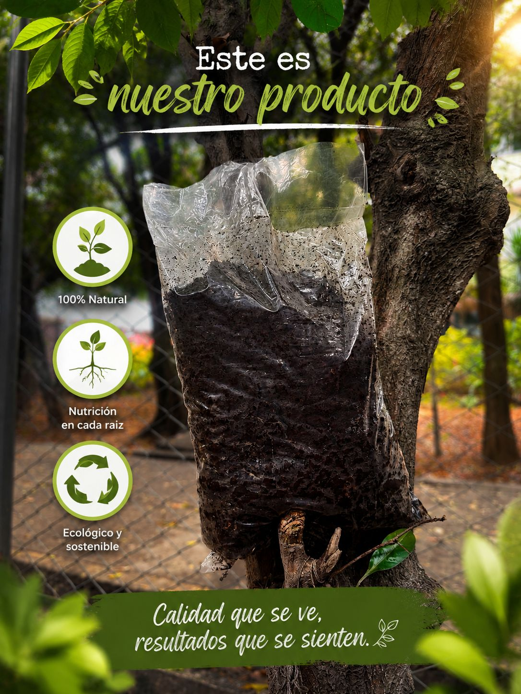
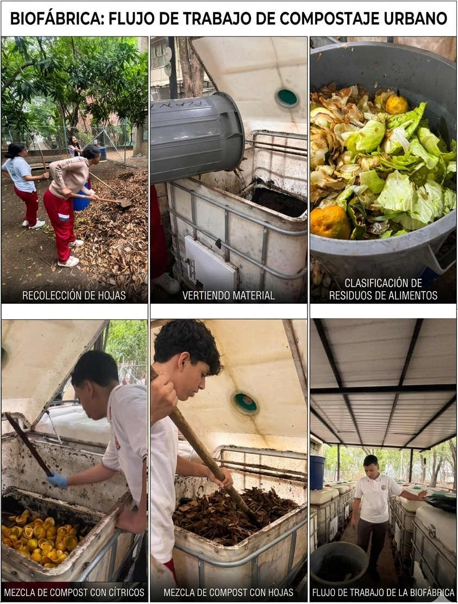

Identidad de la Organización
Misión
Transformar la infraestructura ambiental escolar en un entorno interactivo y productivo, promoviendo el aprendizaje significativo de la economía circular mediante la divulgación y herramientas digitales.
Visión
Convertirse para el año 2026 en el nodo pedagógico y tecnológico de referencia institucional en Cali para la gestión eficiente de residuos orgánicos y producción sostenible de bioinsumos escolares.
Valores Empresariales
Catálogo Institucional de Bioproductos
Línea de soluciones orgánicas de alta calidad generadas a través del aprovechamiento biotecnológico básico del aula viva.

Abono Orgánico Premium
Producto obtenido mediante procesos biológicos controlados de compostaje a partir de residuos orgánicos de la cafetería escolar.
Humus de Lombricultura
Sustrato enriquecido obtenido mediante descomposición aeróbica con lombriz roja, ideal para aportar ácidos húmicos y microorganismos.
Bioinsumos y Fertilizantes
Abonos líquidos y soluciones de microorganismos eficientes biotecnológicos cultivados para la biofertilización del suelo sin químicos.
Abono Orgánico Premium
Obtenido mediante un proceso controlado de compostaje y lombricultura en nuestra Biofábrica. Este abono es rico en microorganismos benéficos y nutrientes esenciales, ideal para revitalizar suelos escolares y caseros de manera 100% natural.
Planteamiento del Problema
A pesar de contar con infraestructura para procesos como compostaje y lombricultura, muchos estudiantes desconocen el funcionamiento e impacto ambiental de la biofábrica, limitando su potencial pedagógico institucional.
Justificación
Transformar la biofábrica en un entorno interactivo mediante el uso de códigos QR y herramientas digitales permitirá conectar la teoría del aula con la práctica real de la economía circular, fomentando una mayor conciencia ecológica.
Fases del Proceso Investigativo
Diagnóstico
Observación directa del estado de la planta y aplicación de encuestas de percepción a la comunidad educativa sobre los residuos orgánicos.
Diseño e Implementación
Creación de señalización física, material informativo interactivo empresarial y vinculación de Códigos QR multimedia.
Evaluación y Seguimiento
Monitoreo del impacto de la estrategia pedagógica y actualización mensual de contenidos informativos ambientales.
¿Cómo operamos?
Nuestro modelo de gestión ambiental sigue un ciclo cerrado. Aquí puedes observar la ruta técnica desde la recolección hasta la obtención del bioinsumo final.
Ver Metodología Completa
Sede Central y Operaciones
Nuestra planta física de transformación y aula interactiva se encuentra ubicada en el corazón de la comunidad educativa, sirviendo como núcleo de desarrollo sostenible local.
📍 Ubicación: Cali, Valle del Cauca, Colombia
💼 División: Modalidad de Gestión Ambiental
🏫 Institución: I.E. INEM Jorge Isaacs
Puntos de Información TIC
Usa los códigos QR físicos situados en el aula viva para acceder inmediatamente al reporte detallado de indicadores.
Ver Bitácora de Avances